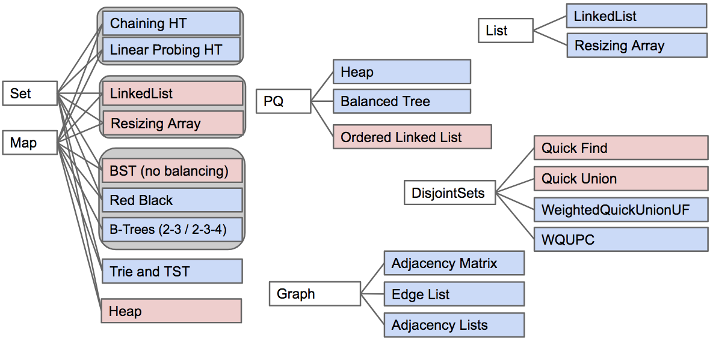
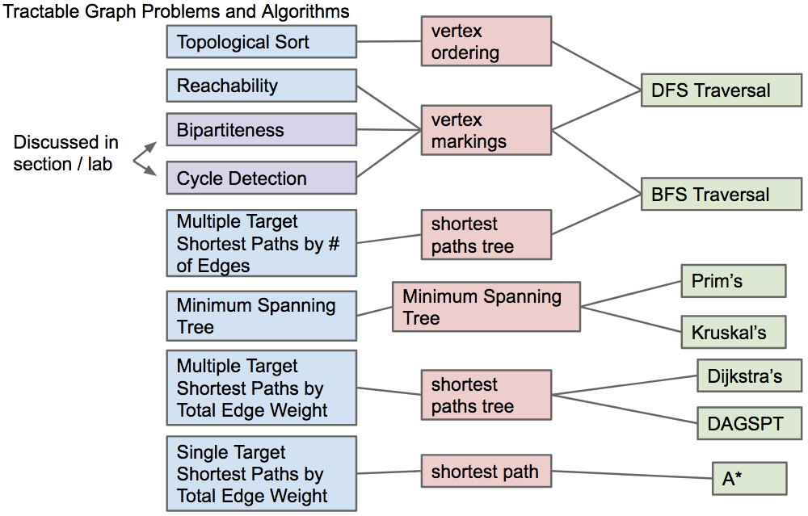

Lecture 40 - 04/28
Course Recap - What We've Learnt:
- Programming Languages:
- Object based programming: Organize around objects
- Object oriented programming:
Interface Inheritance
Implementation inheritance - Dynamic vs. static typing.
- Generic Programming, e.g.
ArrayList<Integer>, etc... - Memory modeled as boxes containing bits
- Bit representation of positive integers
- Java
- Some standard programming idioms/patterns:
- Objects as function containers (e.g. Comparators,
IntUnaryFunctions) - Default method specification in interfaces
- Iterators and views (e.g.
keySet)
- Data Structures:
- Important data structure interfaces:
java.util.Collection (and its subtypes), with a special emphasis on Map (and its subtypes)- Our own Collections we created in the course (e.g.
Map61B, Deque)
- Concrete implementations of these abstract implementations:
- Example:
ArrayDeque implements Deque
- Algorithm Analysis
- Asymptotic analysis
- O,Θ,Ω, and ~ runtime notation
- Worst case vs. average case vs. best case
- Determining code's runtime through empirical analysis and inspection
- Amortized time
- Example:
ArrayLists are actually good at basic operations despite resizing. Amortized runtime is constant
- Implementations of Abstract Data Types (ADTs):
 - Array-Based Data Structures:
ArrayList and ArrayDequeHashSet, HashMap: Arrays of ‘buckets’ArrayHeap (tree represented as an array)
- Linked Data Structures
- Linked Lists
LinkedList, IntList, LinkedListDeque, SLList, DLList
- Trees: Hierarchical generalization of a linked list. Aim for bushiness.
TreeSet, TreeMap, BSTMap, Tries (trie links often stored as arrays)
- Graphs: Generalization of a tree
- Tradeoffs of array vs linked data structures
- Graph problems and their algorithms:
 - Comparison based search/sort vs. element based search/sort
- Element based sorts/searches led to counting sort and radix sort (LSD, MSD varieties)
- Extra Topics:
- Compression
- Huffman Coding, data structures for coding, and other approaches (LZW encoding, Run Length Encoding)
- Impossible and Intractible Problems
- Impossible: algorithm to find best possible compression for any input
- Intractible problems: 3SAT, independent set, NP-completeness
- Does P=NP? If so, major implications
- The practice of programming:
- Java syntax and idioms
- JUnit testing (and its more extreme form: Test-driven development)
- Mining the web for code
- Regular expressions (regex)
- Debugging:
- Identify the simplest case affected by the bug
- Hunt it down, giving it no place to hide
- With the right methodology, can find bugs even when finding bug through manual code inspection is impossible
- Real tools: IntelliJ, git, command line, Maven
- Data structure selection (and API Design)
- Drive the performance and implementation of your entire program
- Working with complex APIs, specifications: Project 2 and Project 3
- Project 3 also involved interacting with an existing code base
- If we had a few more weeks of class, what would we cover?
- Dynamic programming
- K-d trees
- Exotic data structures like skip lists
- Weird sorts like smoothsort
- Max flow
- Correct debugging